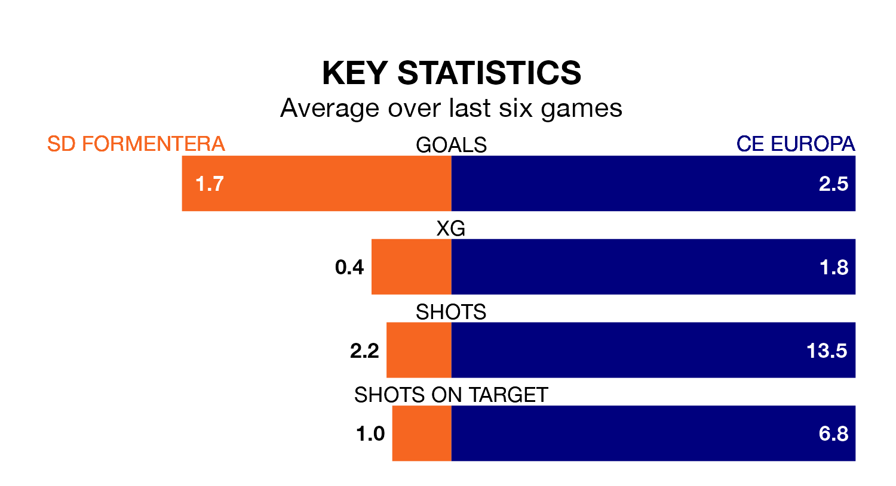

SD Formentera host CE Europa on Sunday at the Estadio Municipal in Segunda División RFEF Group 3.
In their last league match, on January 7, Formentera beat Cerdanyola del Vallès 3-0 at home.
CE Europa drew, 1-1 away at Espanyol B.
With 30 goals in 17 games so far this season, CE Europa are the league's highest scorers with 1.8 goals per game. And they are conceding fewer than average, letting in 12 goals at a rate of 0.7 per game.
Formentera, meanwhile, are average scorers, with 1.2 goals per game. They have conceded 1.3 goals per game.
The visitors are third in the table after 17 games, of which they have won nine and drawn five, earning 32 points.
The home team are eight places behind CE Europa in 11th, with six wins and three draws putting them on 21 points.
Formentera are in mixed form in Segunda División RFEF Group 3, with three wins and three losses from their last six games.
With three wins and two draws over that period, CE Europa's form is slightly better – they have taken 11 points from 18, compared to Formentera's nine.
Updated: 10:50, 10/01/24